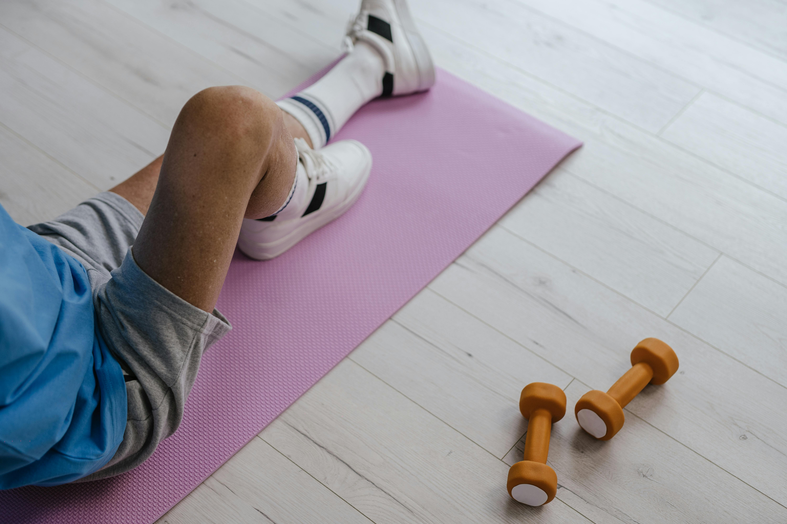
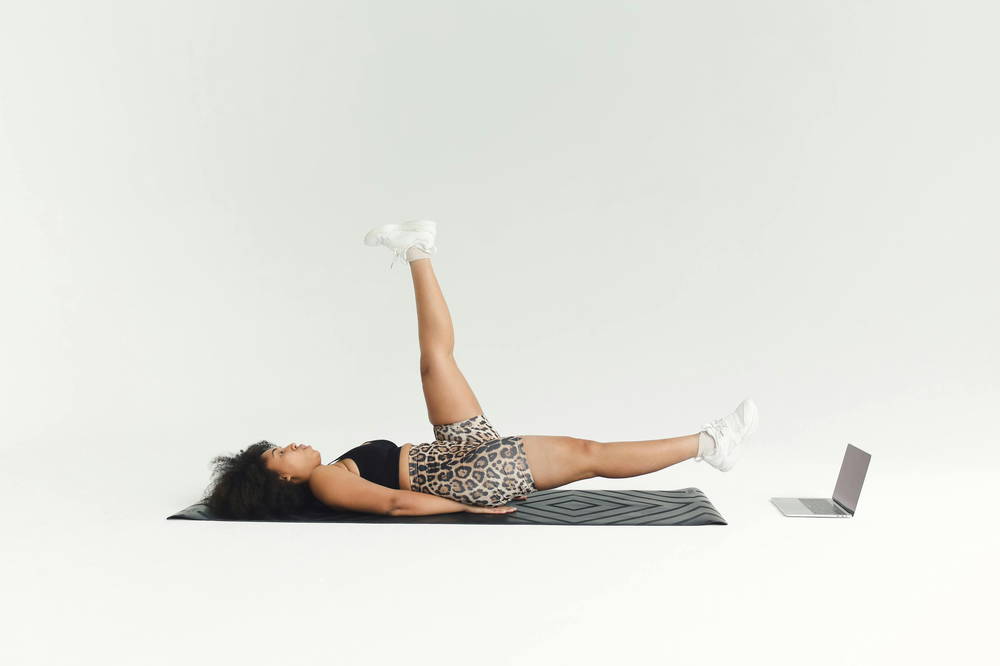

What Is a Stroke — and What Does Recovery Look Like?
Understanding what happened in the brain helps explain what physiotherapy can achieve.
A stroke occurs when blood flow to part of the brain is suddenly interrupted — either by a blood clot blocking an artery (ischaemic stroke, making up about 85% of cases) or by a blood vessel rupturing (haemorrhagic stroke). Without blood, brain cells in the affected area die within minutes. The resulting damage disrupts the neural pathways that control movement, speech, sensation, and coordination — depending on which part of the brain is affected.
The good news is that the brain is not a fixed organ. It has an extraordinary capacity — called neuroplasticity — to reorganise itself by forming new connections around damaged areas. This is the foundation of stroke rehabilitation. Every repetition of a movement, every exercise session, every structured activity physically rewires the brain — a process that continues as long as rehabilitation continues.
The most rapid recovery typically occurs in the first 3–6 months after a stroke — but improvement continues for much longer with consistent physiotherapy. Patients we see even 1–2 years after their stroke continue to make meaningful progress. The key is not timing — it's the quality and consistency of the rehabilitation.
Quick Facts
Common Effects of Stroke
The effects depend on which area of the brain was affected. Physiotherapy addresses each of these directly.
Hemiplegia / Hemiparesis
Weakness or paralysis affecting one side of the body — the arm, leg, or both. The most common and most addressable effect through rehabilitation.
Balance & Coordination Problems
Difficulty maintaining upright posture, walking steadily, or performing coordinated movements due to cerebellar or vestibular damage.
Spasticity
Involuntary muscle stiffness and tightening, particularly in the arm, hand, or leg, making controlled movement difficult and often painful.
Gait Abnormalities
Altered walking patterns — foot drop, circumduction, or stiff-legged gait — that increase fall risk and limit independence.
Loss of Fine Motor Control
Difficulty with precise hand and finger movements — gripping objects, writing, buttoning clothes, or using utensils.
Sensory Loss
Reduced sensation, numbness, tingling, or altered pain perception on the affected side, complicating movement and increasing injury risk.
Reduced Functional Independence
Difficulty performing daily tasks — transferring from bed to chair, climbing stairs, dressing, or bathing — due to combined weakness and coordination loss.
Post-Stroke Fatigue
Profound and often underestimated exhaustion — both physical and cognitive — that limits the amount of therapy the patient can tolerate and must be carefully managed.
Who Needs Stroke Rehabilitation Physiotherapy?
Physiotherapy after stroke is not only for the early stages. Any of the following situations calls for specialist input.
Discharge from Hospital
After the acute phase, outpatient physiotherapy continues and advances the recovery begun in hospital. Starting promptly after discharge maximises the critical recovery window.
Weakness on One Side
Any remaining arm, hand, or leg weakness — even mild — responds to structured progressive strengthening and neuromuscular re-education.
Balance Problems or Fear of Falling
Balance training can dramatically reduce fall risk and restore the confidence to move around independently — both at home and outside.
Abnormal Walking Pattern
Gait abnormalities are rehabilitable with specific exercise and training. Correcting walking patterns improves safety and dramatically reduces energy expenditure.
Muscle Stiffness or Spasticity
Spasticity management through stretching, positioning, and electrotherapy prevents contractures and maintains the range needed for functional use.
Stroke Occurred Months or Years Ago
It is never too late. The brain retains plasticity throughout life. Patients with chronic deficits — even years after stroke — still respond to structured physiotherapy.
How We Approach Stroke Rehabilitation
Our approach combines the latest evidence in neurological rehabilitation with a deeply personal understanding of each patient's goals.
Our Focus
Every session is built around your specific deficits and your personal goals — returning home safely, walking to prayers, using your arm independently.
- Improved walking ability and safety
- Regained arm and hand function
- Reduced spasticity and stiffness
- Improved balance and fall prevention
- Greater independence in daily life
Neurological Assessment
Your first session is a detailed neurological assessment. We evaluate muscle strength, tone, reflexes, sensation, balance, and functional movement on both sides. We document your specific deficits clearly and set realistic, measurable goals together with you and your family. This baseline is what we measure all progress against.
Spasticity and Range of Motion Management
Before strengthening can begin, we manage the muscle stiffness and tightness that often develops after stroke. This involves careful stretching, soft tissue work, positioning guidance, and if needed, electrical stimulation to reduce hypertonicity and maintain the joint range essential for functional movement.
Neuromuscular Re-education
We use task-specific, repetition-based training to rebuild the neural pathways connecting the brain to the affected muscles. Each session involves practising real functional movements — reaching, gripping, weight-bearing, stepping — in a carefully structured progression. Repetition is everything: it is the currency of neuroplasticity.
Gait and Balance Training
Walking retraining is a central pillar of stroke rehabilitation. We work on weight transfer, step symmetry, foot clearance, turning, and managing uneven surfaces. Balance training addresses the specific deficits identified in your assessment — whether they are cerebellar, vestibular, or proprioceptive in origin.
Functional Independence and Home Programme
We train the specific functional tasks that matter most to you and your family — transfers, stairs, self-care tasks, and community mobility. We also design a structured home exercise programme and advise the family on how to safely assist and encourage practice between sessions. Caregiver education is an essential part of stroke rehabilitation.
Treatment Techniques We Use
Neurological physiotherapy draws on a wide range of evidence-based techniques, selected based on your specific presentation.
Neurodevelopmental Treatment (Bobath)
A hands-on facilitation approach that guides the patient through normal movement patterns, inhibiting abnormal tone and facilitating the recovery of coordinated, functional movement. Particularly effective for managing spasticity and restoring upper limb function.
View ServiceNeuromuscular Electrical Stimulation (NMES)
Electrical stimulation applied to weakened muscles — particularly the wrist extensors, ankle dorsiflexors, and shoulder — to elicit contractions, reduce spasticity, and strengthen the neural connection between brain and muscle. A powerful adjunct to active exercise.
View ServiceTask-Specific Training
Intensive, repetitive practice of the exact functional tasks the patient wants to regain — reaching for objects, walking, climbing stairs. The brain learns by doing, and the more specific the practice, the stronger the new neural pathways formed.
View ExercisesRecovery Timeline
Stroke recovery is a marathon, not a sprint. Every patient progresses differently — but this is the general trajectory with consistent outpatient physiotherapy.
Weeks 1–4
Tone management, early mobility, and transfers. Establishing safety and basic independence.
Months 1–3
Gait retraining, strength building, and functional task practice. Most rapid improvement occurs here.
Months 3–6
Advanced balance and endurance. Community mobility. Fine motor retraining. Independence milestones.
6 Months+
Continued improvement with maintenance programme. Return to valued activities and roles.
Early Rehabilitation Exercises
These exercises are examples of what we prescribe in the early stages of stroke rehabilitation. Your specific programme will be tailored to your presentation by your therapist.

Ankle Pumps
Rhythmic ankle movement on the affected side activates the calf pump, reduces leg swelling, and begins re-establishing the neural connection between the brain and the foot. One of the safest early exercises for any level of lower limb weakness.
Full Instructions
Heel Slides
Lying on your back, slowly slide the heel of the affected leg up towards the buttocks, bending the knee, then return. This rebuilds the coordination between hip flexors, hamstrings, and knee — essential for the swing phase of walking.
Full Instructions
Straight Leg Raise
Tighten the affected thigh, then lift the leg 30–45 degrees and hold briefly. Strengthens the hip flexors and quadriceps while rebuilding voluntary motor control — the neural command chain from brain to leg that stroke interrupts.
Full InstructionsWarning Signs — Act Immediately
During stroke rehabilitation, certain changes in the patient's condition require immediate medical attention — not physiotherapy.
Stop and call emergency services if any of the following occur
These may indicate a second stroke or serious medical complication. Do not wait — call for help immediately.
Ready to Begin — or Continue — Your Recovery?
Whether your stroke was recent or years ago, structured physiotherapy can still make a meaningful difference. Our certified neurological physiotherapists in Luxor will assess your current level of function, explain exactly what is possible, and build a rehabilitation programme around your personal goals — from walking safely to resuming daily life. Evening appointments available every day except Sunday.